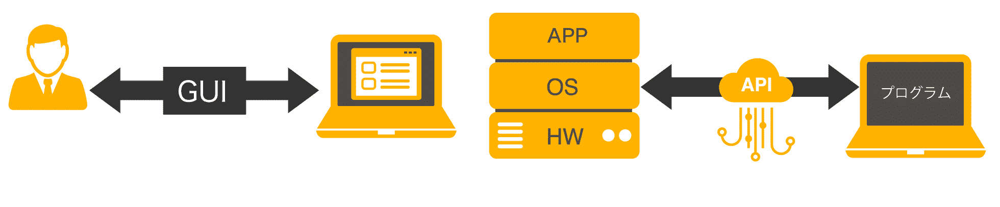
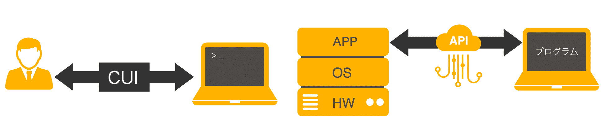
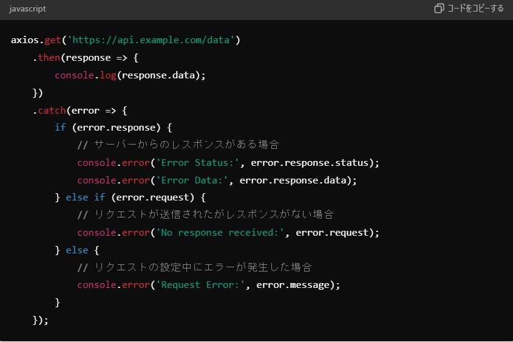

API(Application Programming Interface)とは、接続先のOSを呼び出すことや互いのソフトウェアやアプリケーション機能の一部を共有することです。APIを通じて連携をすることで、アプリケーション機能を拡張させ、双方のアプリが更に便利になることがメリットです。人間がコンピュータを利用する際はGUI(Graphical User Interface)を通じてOSやアプリケーションを利用しますが、コンピュータはプログラムを通じてOSやアプリケーションの機能利用するので、プログラマ（アプリケーションエンジニア）はCUI(Character-based User Interface)を用いてソフトウェアやアプリケーションを開発します。一方でAPIは、アプリケーション開発で既存のライブラリを使う場合に用いられ、用意されたAPIに従って処理を記述することで、ライブラリの中身を知らなくてもライブラリが持つ機能を使用できます。OSが提供する機能を呼び出すために使われるAPIもあれば、他のアプリケーションが提供する機能を呼び出すために使われるAPIも存在します。
 HTTP通信（データの更新・取得）を簡単に行うことができる、JavaScriptのライブラリ。
APIを提供するクラウドサービスに対して、データを送受信することができる。
以下に、GETリクエストを使ってAPIからデータを取得する簡単な例を示します。
axios.get('https://api.example.com/data')
.then(response => {
console.log(response.data);
})
.catch(error => {
console.error('Error:', error);
});
Axiosの代わりに使用できるツールとして、次のようなものがあります。
エラーハンドリングとはそもそもなにかというと、プログラムがエラーを起こした時に、すぐに実行を終了せずに、あらかじめ用意しておいた処理を行うことです。
API通信でエラーが発生した場合、そのステータスコードに基づいて適切な処理を行うことが重要です。
chatgptで出力したエラーハンドリングのコードを例として掲載します。
本コンテンツの作成時間：約11時間